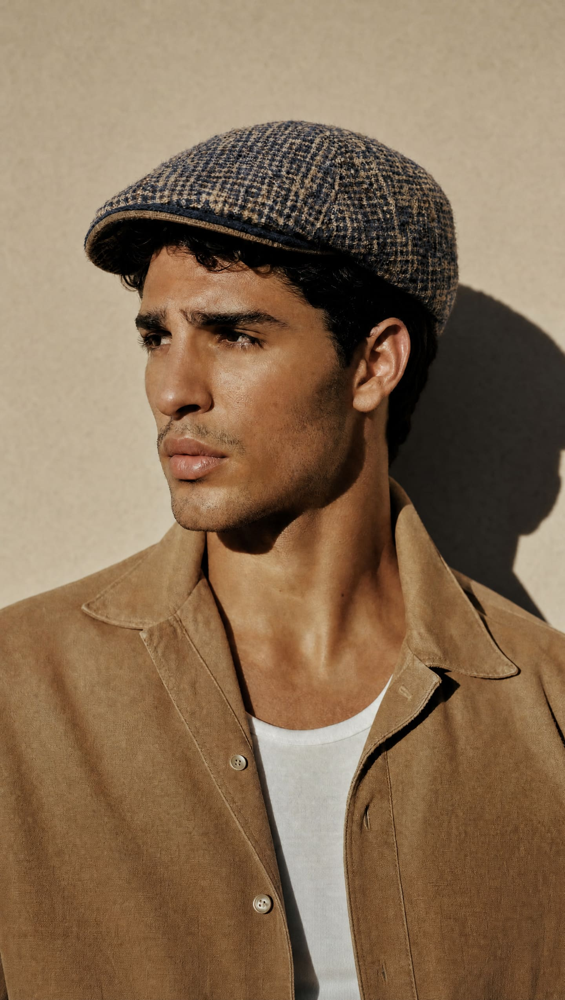
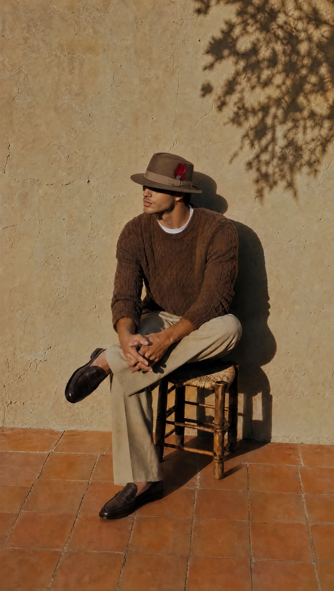
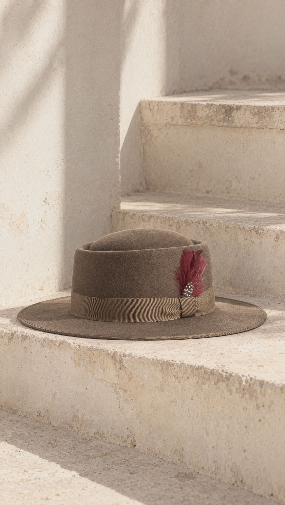
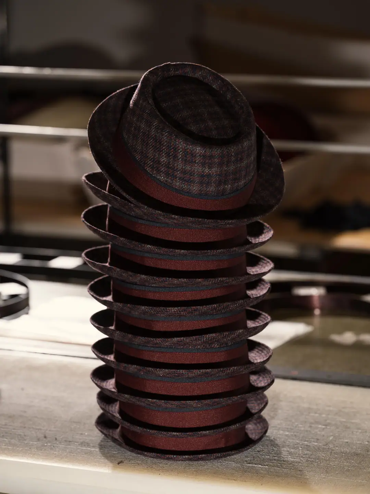
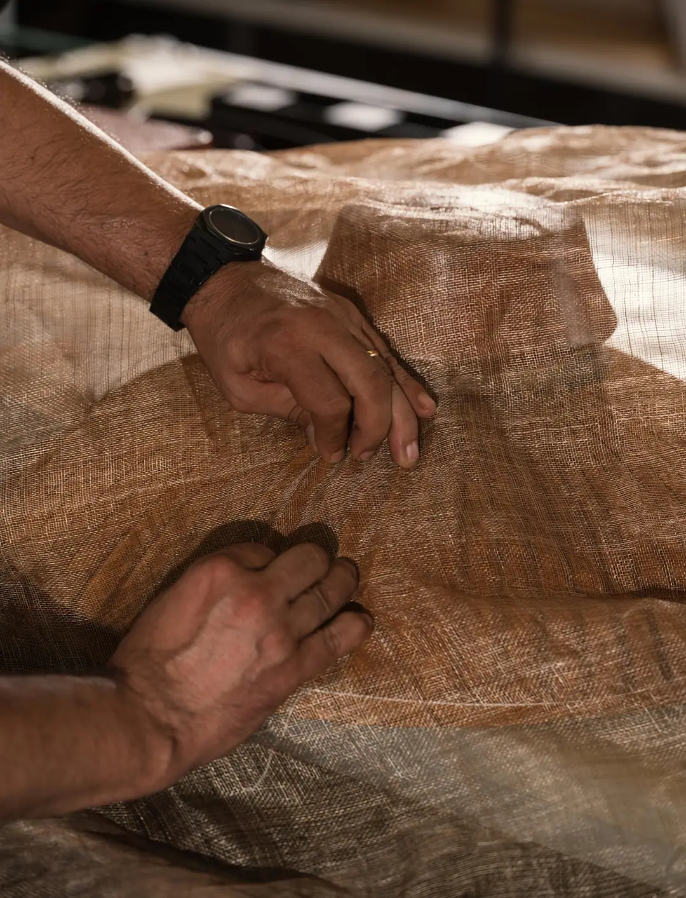
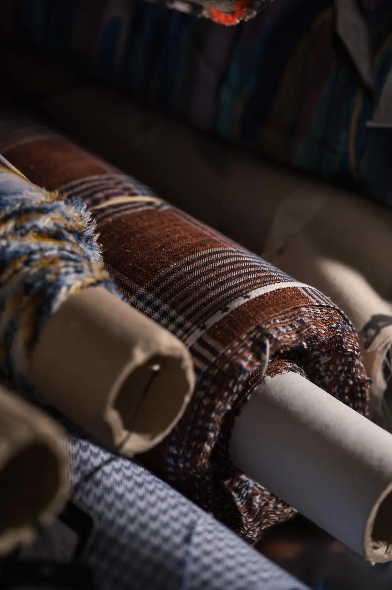

ORA IN OLTRE 500 PUNTI VENDITA


COLLEZIONE AUTUNNO-INVERNO · FW27


MAESTRI CAPPELLAI MARONE


Marone World
Newsletter
MARONE WORLD
Inserisci il tuo indirizzo di posta elettronica per registrarti alla Newsletter